>Hi, I'm Chris
>I have a passion for programming and love learning new things.
>About Me
.
About Me
My name is Christopher Clemente, I am currently a senior attending
Rutgers University. I love learning new things and pushing myself to my
limits. I have experience in programming langugages such as Java, Python, C,
and database experience in MYSQL. For a more comprehensive list of my skills
check out my resume, or scroll down to my projects below!

